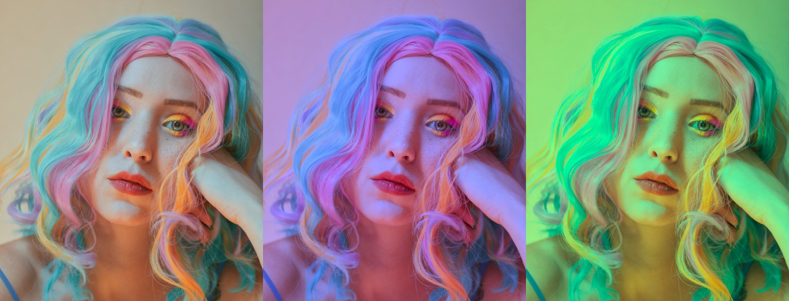

Apply basic color correction
{kind=link}
from tinycio import ColorImage, ColorCorrection
im = ColorImage.load('my/image.exr', 'SRGB_LIN')
cc = ColorCorrection()
cc.set_contrast(1.2)
cc.set_saturation(0.8)
cc.save('/my/cc_settings.toml') # if needed
im.correct(cc).save('my/corrected_image.exr')
Alternatively, without ColorImage:
from tinycio import ColorSpace, fsio
im_in = fsio.load_image('my/image.exr')
cs_in = ColorSpace.Variant.SRGB_LIN
cs_cc = ColorSpace.Variant.ACESCC
im_cc = ColorSpace.convert(im_in, cs_in, cs_cc)
cc = ColorCorrection()
cc.set_contrast(1.2)
cc.set_saturation(1.2)
im_corrected = cc.apply(im_cc)
fsio.save_image(im_corrected, 'my/corrected_image.exr')
Most color correction uses ACEScc, so ColorCorrection.apply() expects inputs in that color space.
ColorImage.correct() handles this conversion automatically.
Your instructions to the the ColorCorrection object are persistent (they change
the instance’s state rather than returning a new one) and idempotent (no difference between
calling set_hue_delta() once or five times). It is recommended
to use the setter functions as they perform color value conversions and check value ranges.
Note
The arguments hue and saturation below are perceptually-linear values (the H and S from the OKHSV color space); hue delta has a [-1, +1] range but also operates in OKLAB.
Color filter
{kind=link}
Color filters at: [0, 0.5], [0.33, 0.5], [0.66, 0.5]
cc = ColorCorrection()
cc.set_color_filter(hue = 0., saturation = 0.5) # red filter
See: set_color_filter()
Exposure bias
{kind=link}
Exposure bias at: -2, -1, 0, +1, +2
cc = ColorCorrection()
cc.set_exposure_bias(1) # +1 f-stop
See: set_exposure_bias()
Hue delta
{kind=link}
Hue delta at: -0.66, -0.33, +0.33, +0.66
cc = ColorCorrection()
cc.set_hue_delta(-0.5) # shift hue by -0.5 (-1 and +1 are identical)
See: set_hue_delta()
Saturation
{kind=link}
Saturation at: 0.33, 0.66, 1.33, 1.66
cc = ColorCorrection()
cc.set_saturation(1.3) # increase image saturation
See: set_saturation()
Contrast
{kind=link}
Contrast at: 0.5, 1, 1.5, 2
cc = ColorCorrection()
cc.set_contrast(1.3) # boost contrast
See: set_contrast()
Shadows, midtones and highlights
{kind=link}
Shadow pulled to blue, highlights to red and vice-versa
# Arbitrary values - just for example
cc = ColorCorrection()
cc.set_highlight_offset(-0.02)
cc.set_highlight_color(hue = 0.33, saturation = 0.5)
cc.set_midtone_offset(0.022)
cc.set_midtone_color(0.66, 0.15)
cc.set_shadow_offset(0.1)
cc.set_shadow_color(0., 0.08)
This is a little awkward to describe without a GUI, but if you’ve ever used the color wheels on common color grading software, you probably know what these settings do.